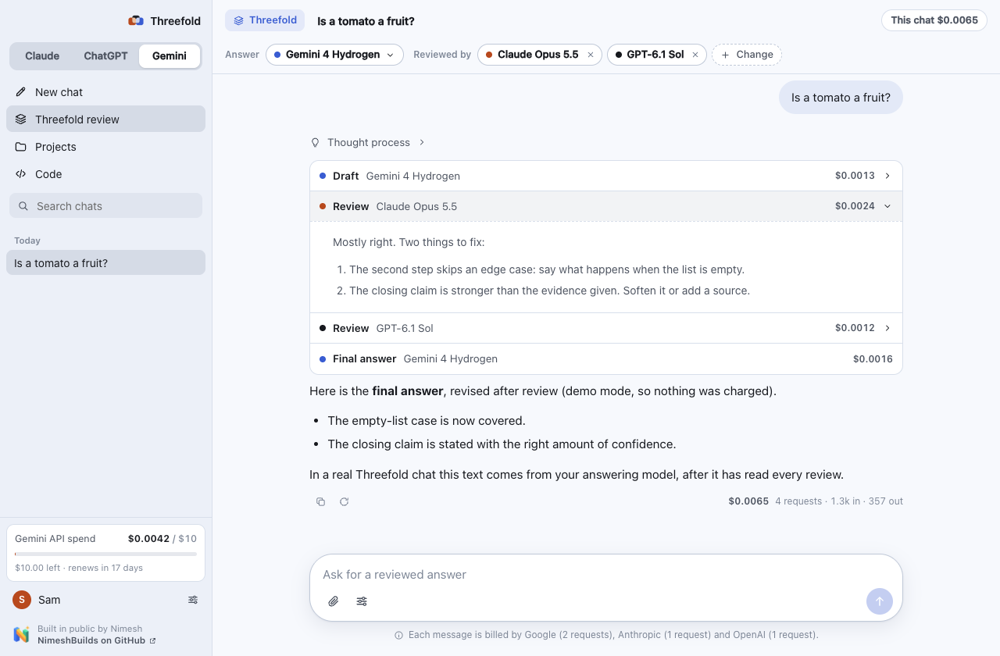
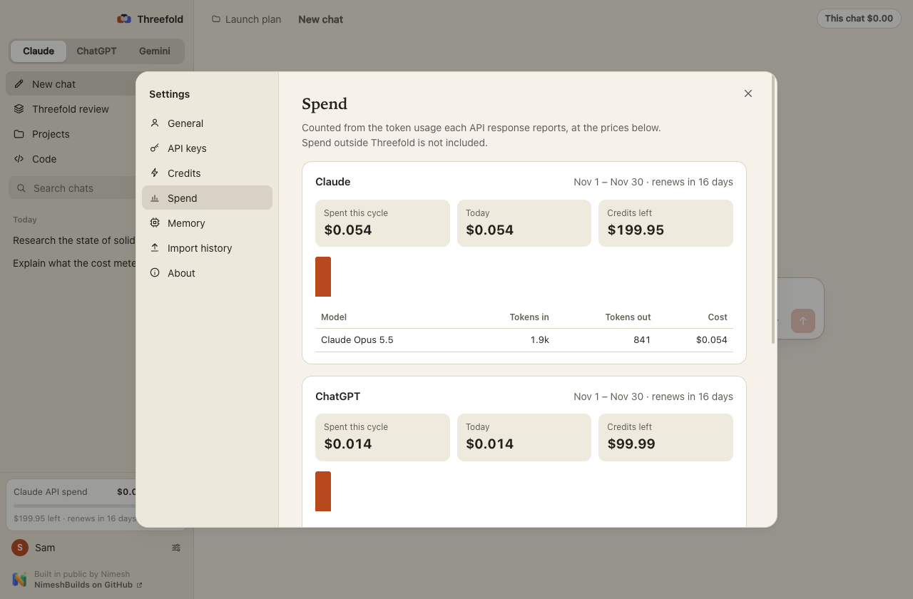
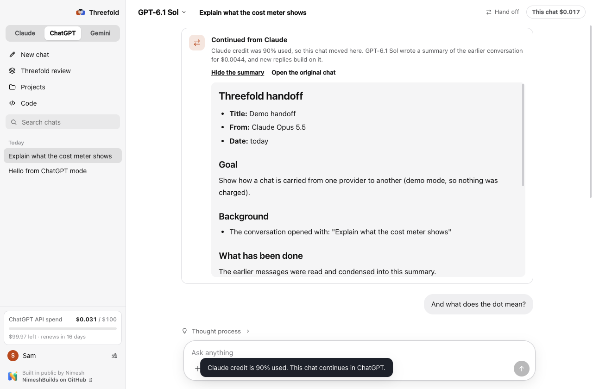
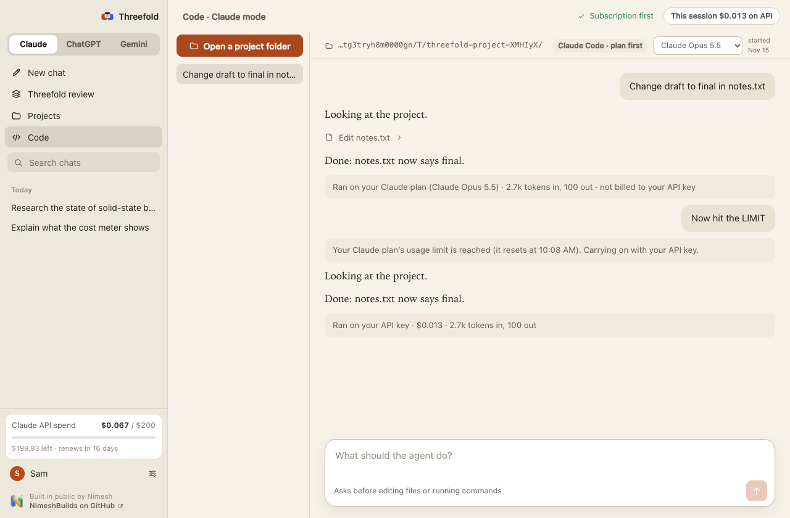
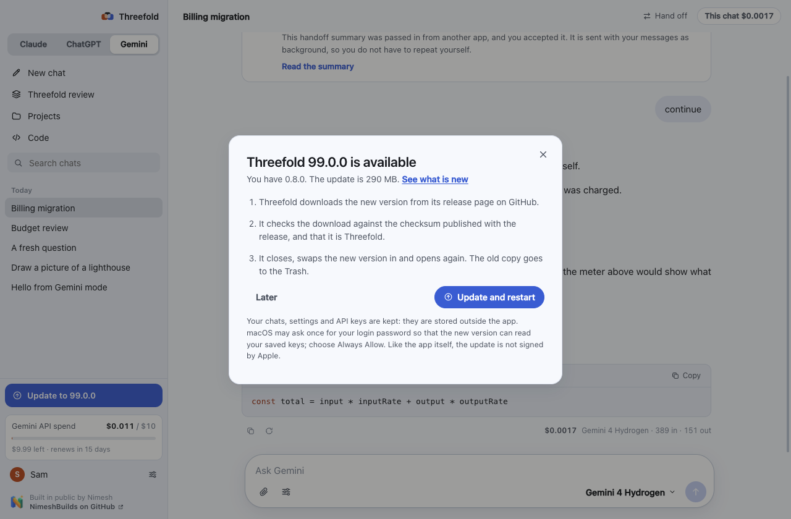
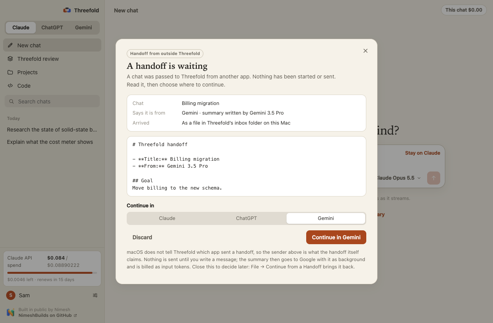

Claude
- Max
- $100 a month
- Ultra
- $200 a month
- Team
- pooled, up to $500
Expires each billing cycle. Anthropic's guide
A local app for macOS
Paid Claude, ChatGPT and Google AI plans now come with monthly API credits that their own apps cannot spend. Threefold gives those credits somewhere to go: a Claude mode, a ChatGPT mode and a Gemini mode on your Mac, with the cost of every message shown while it is being written.
No account, no server, no telemetry. The download is for Apple Silicon Macs on macOS 13 or later, and it is not signed by Apple: the quick start shows what that means, or how to build it yourself.

Screens from demo mode, which is why the replies describe themselves as canned.
Each company adds API credit to its paid plans. None of them lets you spend it in its own app.
Expires each billing cycle. Anthropic's guide
Expires each billing cycle. OpenAI's guide
Valid for 12 months, after a $5 prepayment. Google's guide
Amounts as published by each company in November 2026. They set these and can change them; check the linked guides.
Every mode has its own look, chat list and model picker, so you always know which API your message is going to.
Warm paper and a serif reading face. Runs on the Anthropic API.
Neutral and clean, with image generation. Runs on the OpenAI API.
Cool and rounded, with Google Search and image generation. Runs on the Gemini API.
Not included: voice, video generation, the official apps' connectors, and syncing chats back to the official apps.
Connect two or more providers and a fourth tab turns on. You choose who answers and who reviews, from every provider you have a key for. Every message then takes three steps.
Your answering model replies, as it would in a normal chat.
The other models read the draft and list what is wrong or missing. They run at the same time.
The answering model rewrites its reply with every review in hand. That is what you read.

Each step is a separate API request. The answering model is billed twice and every reviewer once, each by its own provider. So a message here costs a few times what a normal one does.
Threefold tells you this every time the tab opens, names each provider and how many requests it will get, and lists the cost of every step under the answer.
If a reviewer fails, the others are still used. If none comes back, you get the draft and are told it was not reviewed.
Switch it on for one message. The model plans its questions, searches widely, reads the sources and writes a report with citations. Each provider does this its own way, so Threefold uses each one's own route.
Claude at its highest practical effort with web search and page reading. Anthropic has no separate research endpoint, so this is the chat model working longer.
Your chosen model at its highest reasoning effort with uncapped web search, run in OpenAI's background mode so a long run survives a dropped connection.
Google's Deep Research agent. Google estimates one to three dollars for a typical run.
In Threefold review, deep research makes the draft a full research run. The reviewers may search the web themselves to check its claims and sources, and the answering model then rewrites the report with their findings.
A run takes several minutes and can cost a few dollars across the providers involved. The app says so before you send, and the running cost is on screen the whole time.

Estimates are marked with "≈". Threefold counts what it spends itself; it cannot read your real balance, and a few fees are not counted. The details are written down, not hidden.

A handoff is a summary that lets a conversation carry on somewhere else, so you do not start again. Threefold has two kinds. They look alike in the app, so each one is labelled.
Handoff inside Threefold
Handoff from outside Threefold
threefolds skill in the app you are leaving.Turn on automatic fallback and Threefold watches each provider's monthly credit. When one is nearly used up, the chat moves to a provider that still has credit, and brings its history along.
Off by default, and it needs at least two connected providers with a monthly credit set. A summary carries the gist of a chat, not every word; the original chat stays where it was. You can also hand any chat to another provider yourself, from the top bar.

A Claude or ChatGPT plan already covers coding in its maker's own command-line tool. Threefold's Code tab can spend that first, and move to your API credits only when the plan's limit is reached.
Threefold runs Claude Code and Codex exactly as Anthropic and OpenAI publish them, and never sees your password or a sign-in token. Claude Code still asks before every edit and command. Codex does not ask: it works in its own sandbox, limited to the project folder and without network access. Your plan's own terms and limits apply.

Three ways to get Threefold onto your Mac: download the ready-made app, build it yourself from the source, or let a coding assistant you already use install it. Each takes a few minutes.
Option A
Read this first: the app is not signed by Apple.
Threefold is not signed with an Apple Developer ID and has not been notarized, so Apple has not checked this build. macOS blocks apps like that by default, and you have to allow it yourself, once, in System Settings (steps 3 to 5). Apple advises against doing this for software you do not trust. If you would rather not, use Option B: the source is public, and an app built on your own Mac opens without the warning.
Download the ZIP (about 290 MB).
Download Threefold-mac-arm64.zip
The checksum and older versions are on the releases page.
Double-click the ZIP in your Downloads folder, then drag Threefold into Applications.
Double-click Threefold. macOS stops it and says Apple could not verify the app. Click Done. Do not choose Move to Trash.
Open System Settings → Privacy & Security and scroll down to Security. Next to the note that Threefold was blocked, click Open Anyway. The button is only there for about an hour after step 3.
Confirm with Open Anyway and enter your Mac login password. Threefold opens, and from now on a normal double-click is enough.
This removes the "downloaded from the internet" flag from the app, so macOS skips the check. Run it after step 2, then open Threefold normally.
xattr -dr com.apple.quarantine /Applications/Threefold.appThese are Apple's own steps for opening an app from an unknown developer. On an Intel Mac, use Option B. After you replace the app with a newer version, macOS may ask once for your login password so Threefold can read its saved keys; choose Always Allow.
Option B
Install the tools you are missing. Git comes with Apple's command line tools; Node.js is at nodejs.org. Then install pnpm:
xcode-select --installnpm install -g pnpm@10Get the source and go into its folder.
git clone https://github.com/nimeshbuilds/threefoldcd threefoldInstall what it depends on. This downloads Electron, so give it a few minutes.
pnpm installRun it. This starts Threefold straight from the source, with no macOS warning.
pnpm dev
Optional: build a real app you can keep in Applications. It lands in
dist/mac-arm64/Threefold.app; drag it into Applications.
pnpm dist
Want to look around before connecting anything? pnpm demo starts the app with canned replies,
no keys and no network calls.
Option C
If you use Claude Code, Codex or Gemini CLI, add the threefolds skill (the next box) and ask
for it in a session:
/threefolds install ThreefoldThe assistant checks that your Mac can run the app, tells you that the app is not signed by Apple, and waits for your yes. Then it downloads the app from this project's GitHub release, checks the download against the published checksum, checks that the app is intact and is Threefold, puts it in Applications and opens it. The same request later brings a newer version in.
The skill forbids the assistant to use sudo, to ask for your password, to change any macOS
security setting or to touch your API keys. What you should know: an app fetched this way
is not marked as downloaded from the internet, so macOS does not show the warning from Option A. You are
relying on this project instead of on Apple's check. Say yes only if you trust it; the
source and the
skill's full text are public. In a chat app that cannot run
commands on your Mac, the same request gets you the link to this page.
Threefold tells you when a newer version is out: an Update button appears in the sidebar. Click it, then Update and restart. Threefold downloads the new version from this project's GitHub release, checks it against the checksum published with the release, checks that it is Threefold, swaps itself and opens again. Your chats, settings and keys are kept, and the old copy goes to the Trash.
To find out, Threefold asks GitHub for the number of the newest release when it opens and a few times a
day. Nothing about you or your chats is sent, nothing is installed until you click, and you can switch the
check off under Settings → About. Like the app itself, an update is not signed by Apple;
macOS may ask once for your login password so the new version can read your saved keys. This needs version
0.8.0 or later: from an older version, download once more, or ask your assistant to
/threefolds update Threefold.
When an update changes the threefolds skill, Settings → Handoff skill says
that an older copy is installed and offers Update for each tool. A copy that is newer than
the app's own is never replaced.

threefolds skill
threefolds teaches Claude, ChatGPT and Gemini to write a handoff summary of any chat, to pass
it straight into Threefold on your Mac, and to install or update Threefold when you ask. It is one text file
of instructions with no code in it.
Already running Threefold? Open Settings → Handoff skill and click Install next to Claude Code, Codex or Gemini CLI. That is all. The same tab saves the ZIP for the Claude app, copies the message that creates the skill in ChatGPT and Gemini, and lists commands to try.
Or install it straight from GitHub, with no file to download or unzip:
Claude Code. One command:
mkdir -p ~/.claude/skills/threefolds && curl -fsSL https://raw.githubusercontent.com/nimeshbuilds/threefold/main/skills/threefolds/SKILL.md -o ~/.claude/skills/threefolds/SKILL.mdThen type /threefolds in any session.
The Claude app and claude.ai accept a skill only as an uploaded ZIP; there is no way to add one from a link. The steps are under Handoff.
Codex. Ask Codex to fetch it:
$skill-installer install the skill at https://github.com/nimeshbuilds/threefold/tree/main/skills/threefoldsOr one command, then restart Codex:
mkdir -p ~/.agents/skills/threefolds && curl -fsSL https://raw.githubusercontent.com/nimeshbuilds/threefold/main/skills/threefolds/SKILL.md -o ~/.agents/skills/threefolds/SKILL.mdThen type $threefolds in any session. Codex's sandbox refuses to open another app; the handoff is saved all the same, and Threefold shows it by itself.
The ChatGPT app has Skills only in Business, Enterprise, Healthcare and Edu workspaces. There, paste the install message below into a chat. On a personal plan, use the prompt under Handoff.
Gemini CLI. One command:
gemini skills install https://github.com/nimeshbuilds/threefold.git --path skills/threefoldsThen ask it to "use the threefolds skill" in any session.
The Gemini app creates a skill from a message. Copy the install message below, paste it into a new chat at gemini.google.com, review what Gemini shows and click Create.
/threefolds Write a handoff summary of this chat./threefolds and open it in Threefold Write it and pass it straight in. You are asked before anything opens.$threefolds then pass it to Threefold The same in Codex, where skills start with a dollar sign.Use the threefolds skill. Keep the latest draft in full. Plain words work in every assistant, and you can say what must not be shortened./threefolds update Threefold Bring the app up to the newest version.Whichever way you install it, the first launch opens a short wizard that connects your API keys. That part is next.
A short wizard walks you through it on first launch. Connect one, two or all three.
In the official app's billing settings (or Google AI Studio), link your plan to an API account. This is where the monthly credit lands.
On that provider's developer console, in the same account. It takes a minute.
The key is checked with a free request and stored encrypted on your Mac. You never type it anywhere else.
No plan credits? It still works. Usage is then billed to the payment method on your API account.
Ask each company for an export of your data, then hand the ZIP to Threefold. Your old chats appear in that mode's sidebar and can be continued through the API.
On a Team or Enterprise plan, export works only if an owner has allowed members to export their data.
Business and Enterprise workspaces do not offer this export.
Google exports an activity log, not conversations, so Threefold groups prompts made within half an hour of each other into one chat. Only activity Gemini was saving is included, and work or school accounts may not allow the export.
Open Settings → Import history. Under that provider's heading click Choose export file… and select the ZIP. The first-launch wizard offers the same step. Importing the same export again adds only what is new.
An export is a snapshot. Pictures and uploaded files are not part of it, and chats you continue in Threefold do not sync back to the official apps. Reading old chats is free; continuing one sends its history to the API and is billed like any other message.
An export takes a while and brings everything. When you only want to carry on with one conversation, ask the assistant you are leaving to write a handoff summary and pass it to Threefold. No export, no import.
threefolds is a small skill: one text file of instructions, with no code in it. Threefold installs it for Claude Code, Codex and Gemini CLI with one click, or you can add it straight from GitHub. The chat apps' steps are below.
Open the conversation you want to move and type /threefolds, or ask for a handoff summary. The assistant writes one: goal, background, what was done, where things stand, what is next.
From a coding tool on your Mac, say yes when it asks whether to pass the handoff in. From a chat app, copy the reply and choose File → Continue from a Handoff… in Threefold. Either way Threefold shows you what arrived and asks where to continue.
It looks for Threefold first, before it writes anything, with one command that answers "installed" or "not installed". A chat app cannot run that command on your Mac, so there the answer is "unknown".
It writes the handoff: goal, background, what was done, where things stand, what is next, the details that must not be lost, and how you like to work. Passwords and keys are left out.
It passes the handoff on, according to what step 1 found:
The skill may not say that Threefold is installed, or that it is not, unless it ran the check and saw the answer. And it never puts any part of a conversation into a link.
A handoff that reaches the app from outside is shown to you in full first: its title, who it says it is from, how it arrived. Threefold picks the mode that matches the sender, Claude mode for a chat from Claude, and you can pick another, or discard it. No chat exists until you continue, and nothing goes to a provider until you send a message.
threefold://handoff only tells the app to look for a handoff that is already on your Mac. Text put into the link is ignored, and no other link does anything.Threefold recognises a handoff even when a chat app's Copy button has stripped its formatting, as ChatGPT's does. In Gemini the link in the reply leads to a Google search, not to this site, so use the menu there.

A chat app keeps skills in your account, so the skill is added there. However it was added, the last step is the same: copy the assistant's reply, then choose File → Continue from a Handoff… in Threefold.
/threefolds or ask Claude to "use the threefolds skill".Skills are on every Claude plan, including Free. On Team and Enterprise an owner has to allow them. Anthropic's guide
OpenAI offers Skills in ChatGPT to Business, Enterprise, Healthcare and Edu workspaces, where the admin allows uploads. On a personal plan, use the prompt below instead. OpenAI's guide
/ (or @, if you have the newer shortcut) and pick threefolds.Without a download: paste the install message into a new chat and Gemini creates the skill from it.
Skills are for personal Google accounts, age 18 or over; work and school accounts come later. Uploading works on the web and on Mac. Google's guide
It is the skill's own text, without the part about installing the app. Paste it as a message at the end of the conversation you want to move, in any assistant, and you get the same handoff summary. Threefold also has a button that copies it.
The prompt is the part of SKILL.md from "Step 1" up to "Installing Threefold".
Read a handoff before you continue with it: it is a summary of your conversation, so it can contain whatever you discussed. The skill tells the assistant to leave out passwords, keys and card numbers, and never to put any part of a conversation into a link. Run for real so far: Claude Code and Codex on paid plans, and the pasted prompt in ChatGPT and Gemini on the web, signed out; not yet the Claude app or Gemini CLI. The steps for the chat apps follow each company's help pages; they have not been tested by us inside every plan.
Requests go from your Mac straight to Anthropic, OpenAI and Google. There is no Threefold server, account or telemetry. The one other request asks GitHub whether a newer version exists, and you can switch it off.
API keys are encrypted with a key held in the macOS Keychain. Chats, projects and memory are plain files in a folder you can back up.
The coding agents read only the folder you choose and ask before every file edit and every command. Codex on a ChatGPT plan is the one exception: it works in its own sandbox instead.
Each provider's own API data policy still applies to what you send it. In a Threefold review, your message and the draft go to every reviewer's provider. When a chat moves to another provider, by automatic fallback or because you handed it off, the conversation so far is sent to that provider so it can write the summary. Deep research runs on ChatGPT and Gemini are stored by that provider, because their long-running modes require it.
Threefold is an early preview, built in public. Version 0.8.2 is available as a download for Apple Silicon
Macs and as source. Its interface, cost tracking, importers, review engine, handoffs and updater are covered
by automated tests. The threefolds skill has been run for real in Claude Code and Codex, and as a
pasted prompt in ChatGPT and Gemini; not yet in the Claude app or Gemini CLI. Testing against the live APIs is
in progress. The download is not signed or notarized by Apple.